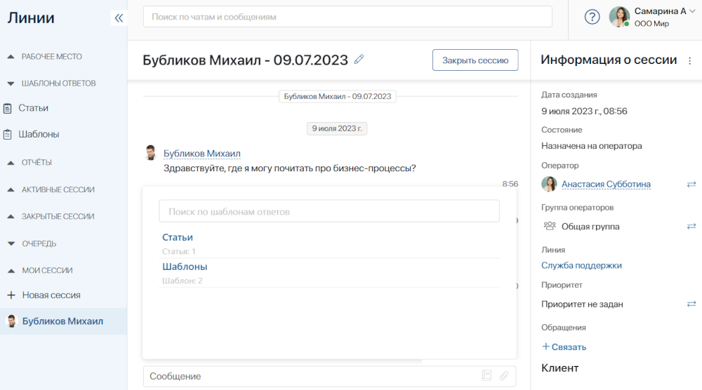
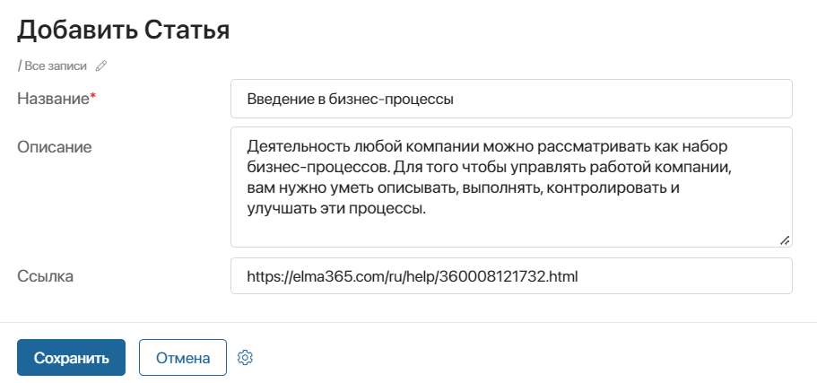
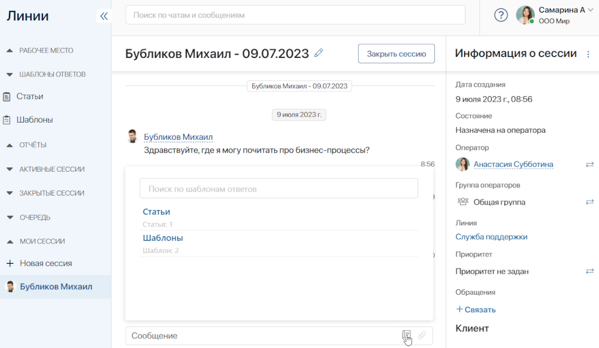
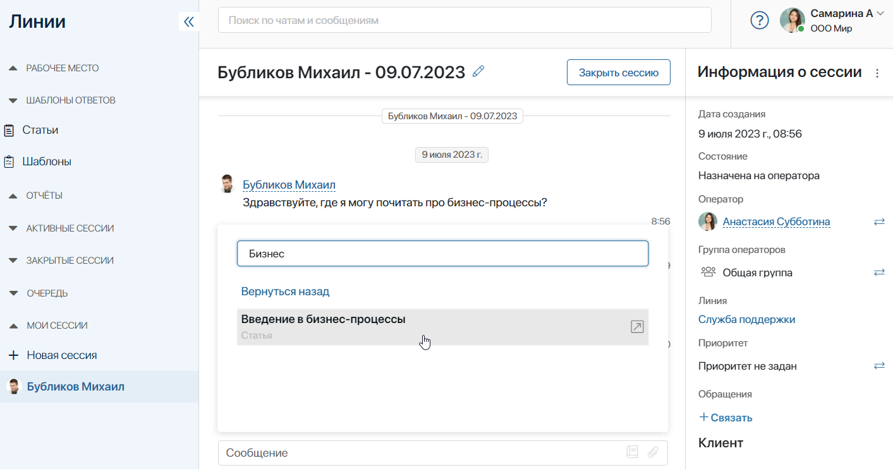

Response Templates are directories located in the Live Chats workspace. Operators can fill them with entries that provide answers to frequent questions asked by customers.
Templates help operators respond to common questions faster. To do that, they simply need to select a ready-to-use response from the list and send it to the user.
The Response Templates section includes two apps:
- Articles. It contains links to the web resources of your company, for example, to your website or reference materials.
- Templates. Ready-to-use responses to most common questions asked by users.

Add a new entry
Since Response Templates are apps, there are three ways to create new items in them: manually, using the Web API, or by importing data from a file.
In this article we will take a look at how to add entries manually:
- Go to the Live Chats workspace, open one of the apps in the directory, and click the +Item name button, for example, +Article.
- Fill out the provided form:
- For an Article:

- Name*. Enter the name of the new article.
- Description. Add information about the page the link leads to. When the operator selects the article, its description is shown in the entry field next to the link.
- Link. Enter the web page address.
- For a Template:
- Name*. Enter the name of the new template.
- Description. Briefly describe the template.
- Template. Enter the text of the message that the operator will send to users. In the message text, you can use context variables, for example, the variable that stores the name of the customer or the name of the live chat. To do that, click {+} in the right corner of the field. You can also add a function, for example, DateTime(), by clicking f(x). For the complete list of available functions, see Template syntax.
When you select a template in the chat, the values will be automatically inserted into the operator’s message.
- Click Save.
The entries created in Articles and Templates can be viewed as a table or tiles.
The Articles app also has a pre-built folder tree with the default All items folder. If needed, you can add other folders to categorize entries. To learn more about folder hierarchy, see Create a folder tree.
How to use articles and templates
When communicating with a customer in a live chat, the operator can select an entry from the template app and paste it as a quick reply. This means that the operator doesn’t need to manually type in the response. They can just select an appropriate option from the list of available templates.
To select an entry, do the following:
- On the session page, click the
 icon in the entry field, and select either Articles or Templates.
icon in the entry field, and select either Articles or Templates.

- The list of available entries from the app opens. To find the response you need, use the search field above the list: type some key words and press Enter. All the appropriate entries will be shown.

- Select an entry. Articles are inserted in the response field together with their Description, while templates are inserted without it.

- You can edit the response if necessary and send it to the user by pressing Enter.
Found a typo? Select it and press Ctrl+Enter to send us feedback